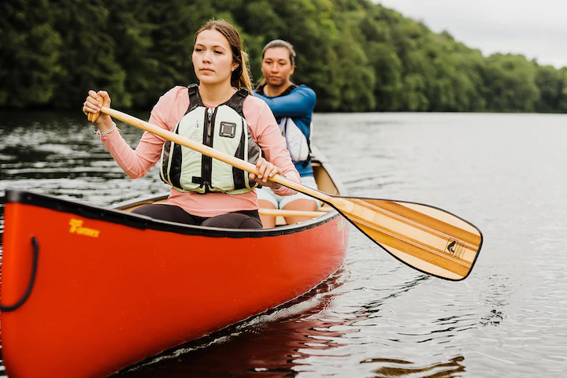
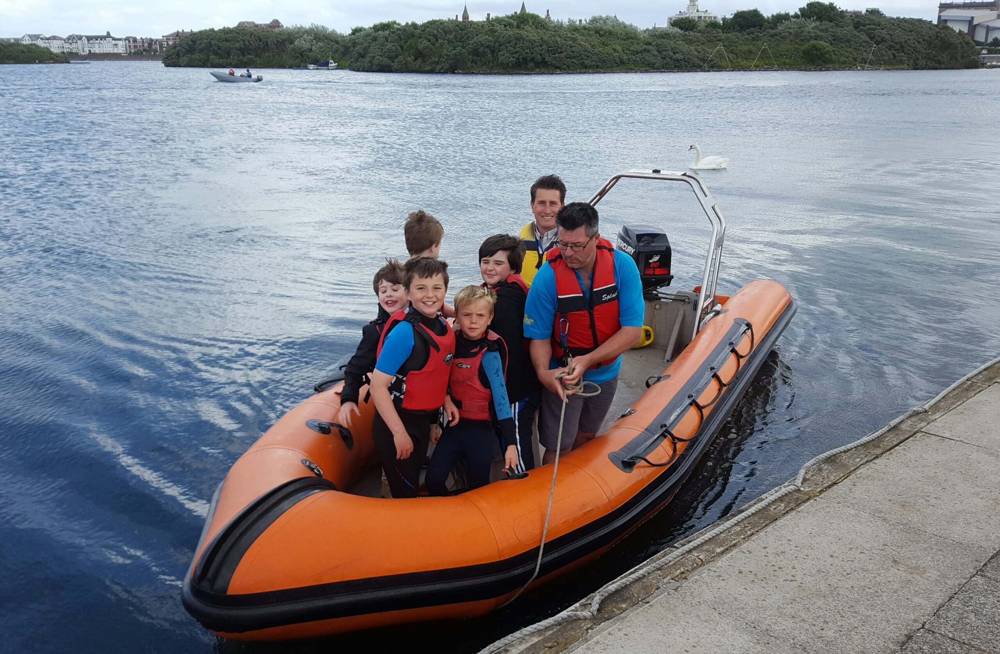

Kayaking
Have a go at paddling, rolling and rafting in one of our brand new kayaks. Max group size 8. Ages 8+

Canoeing
Work single-handedly or in pairs to canoe the length of Lochquarry. You can even take a picnic with you and explore some of the Loch’s islands. Max group size 8 boats (up to 16 people). Ages 6+

Comments